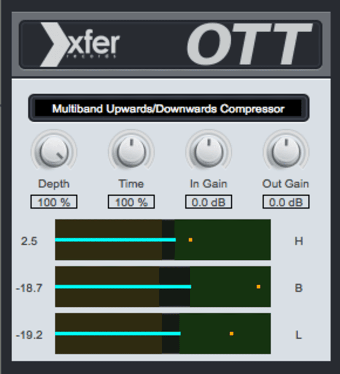

OTT COMPRESSOR
One of the most widely used compressors in Electronic Dance Music. This is the secret sauce to get those massive bass growls and sharp piercing transients on your drums. OTT is included inside of Ableton typically but you can download it free from XFER's site. Give it a shot, they've been giving it away for free for quite some time now as well as a bunch of other freeware to play with. Enjoy.
DOWNLOAD HERE!